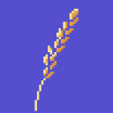

Your Forecast plan and your Harvest hours, together in the menu bar.
If you use both tools, you know the friction: Forecast tells you what you planned, Harvest tells you what you tracked, and figuring out where you actually stand means flipping between the two all week. Yield does that reconciliation for you and keeps the answer in your menu bar — which projects have hours left, which are over, how today fits into the week — so it's easier to decide what to work on next. When you're ready, you can start or stop a Harvest timer right from the dropdown.
Download Yield